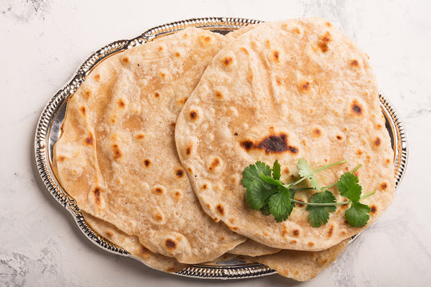

East African Chapati

Region: East Africa
Cooking Time: 45 minutes
Difficulty: Easy
Servings: 4
About This Dish
Chapati is a popular flatbread in East African countries such as Kenya, Uganda, and Tanzania. It is made using flour, water, oil, and salt. It is commonly served with beans, meat stew, or vegetables.
Ingredients
- 3 cups all-purpose flour
- 1 cup warm water
- 3 tablespoons vegetable oil
- 1 teaspoon salt
- Extra flour for rolling
- Extra oil for cooking
Cooking Instructions
Step 1: Prepare the Dough
Mix the flour and salt in a bowl. Add warm water and oil gradually, mixing until a soft dough forms.
Step 2: Knead the Dough
Knead the dough for several minutes until it becomes smooth. Cover it and allow it to rest for 15 minutes.
Step 3: Divide and Roll
Divide the dough into equal portions. Roll each portion into a thin circle on a lightly floured surface.
Step 4: Cook the Chapati
Heat a frying pan over medium heat. Place the rolled dough in the pan and cook on both sides, adding a little oil until golden brown.
Step 5: Serve
Remove the cooked chapati from the pan. Serve warm with stew, beans, or vegetables.